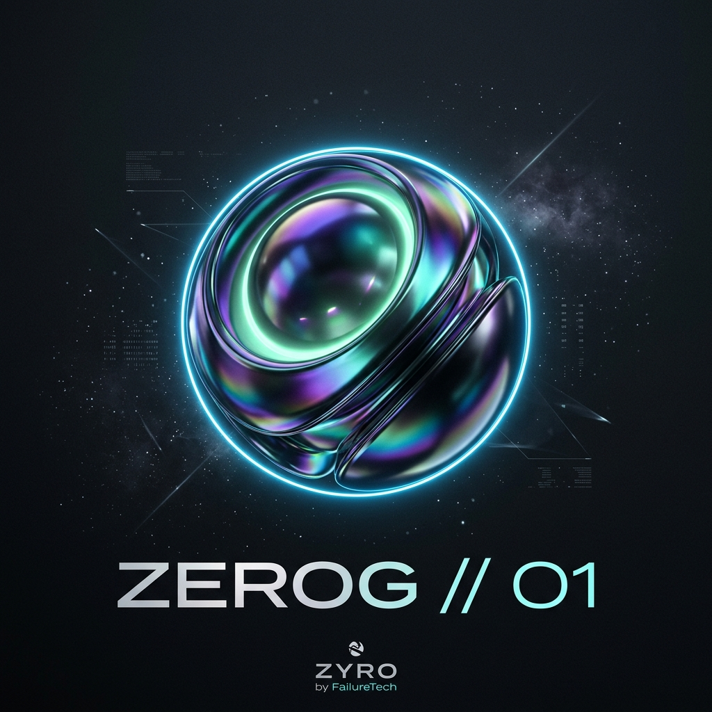
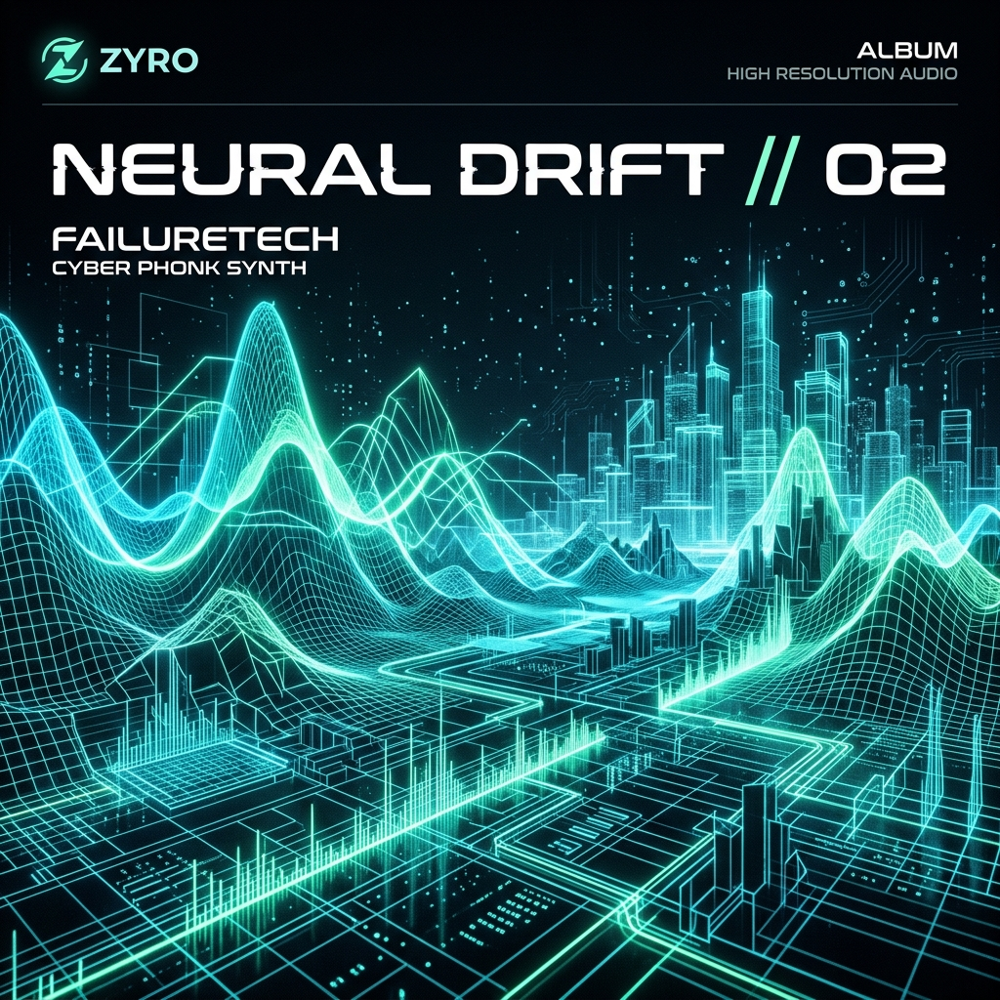
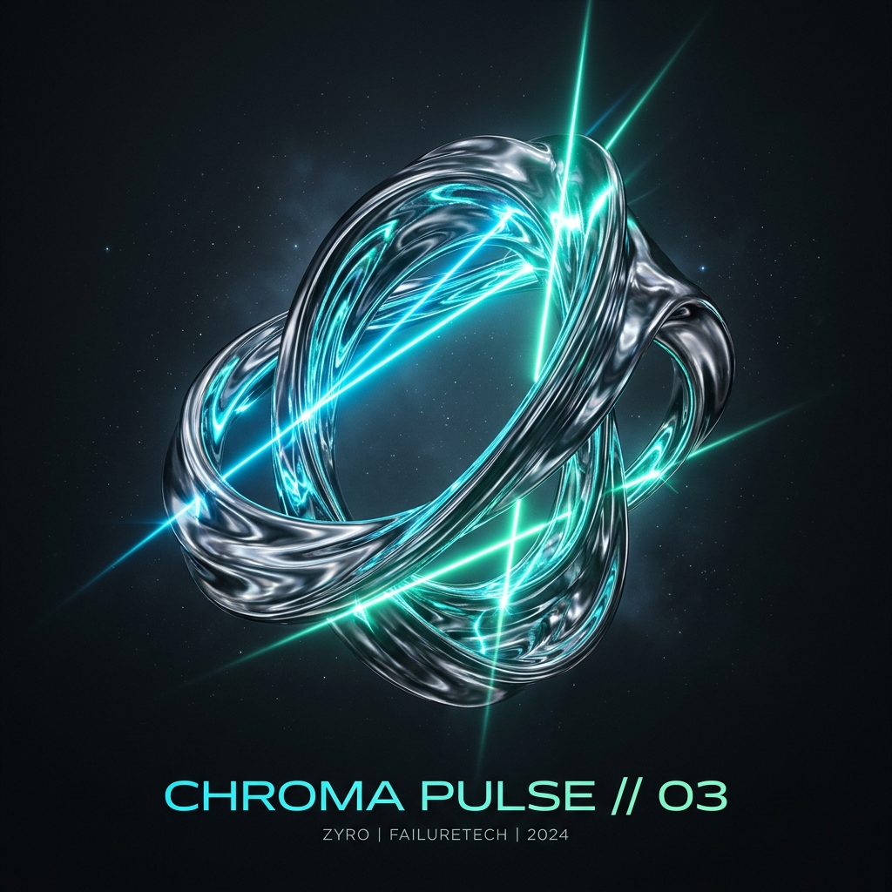

Zero Friction.
Pure Sound.
The audio-visual streaming experience by FailureTech. Engineered for Gen Z creators, sonic explorers, and zero-latency spatial fidelity.

The Orbit Architecture
A radical departure from legacy compression. Zero friction stream pipelines mapped to high-definition spatial spheres.
Zero-G Spatial 360°
Real-time HRTF binaural processing rendering sounds in true spherical space around your skull with pin-point depth.
Neural Mesh Sync
Host synchronized zero-latency silent listening parties with Gen Z friends across Tokyo, Berlin, and NY under 0.18ms.
Algorithmic Crates
Predictive vibe classification syncing with circadian energy drops, cyber phonk surges, and deep focus flows.
Pure Master FLAC
Direct uncompressed 9216 kbps 24-bit studio pipeline. Experience every transient snap and sub-bass rumble untouched.
Explore Sonic Crates
Community-driven, AI-curated sound capsules built for late night focus, Tokyo drift runs, and deep ambient chill.
ZEROG // 01
Curated by KAIRO x FailureTech Labs

NEURAL DRIFT // 02
Curated by Neon Protocol

CHROMA PULSE // 03
Curated by Orbital Sync
Zero-G Sound Sculptor
Tweak live frequency harmonics, filter cutoff envelopes, and sub-bass resonance in real-time. Experience audio directly mapped to your senses.
Live Orbit Rooms
Interactive demonstration of synchronized spatial audio spaces. (Room participant counts and telemetry are visual simulations for demonstration purposes).